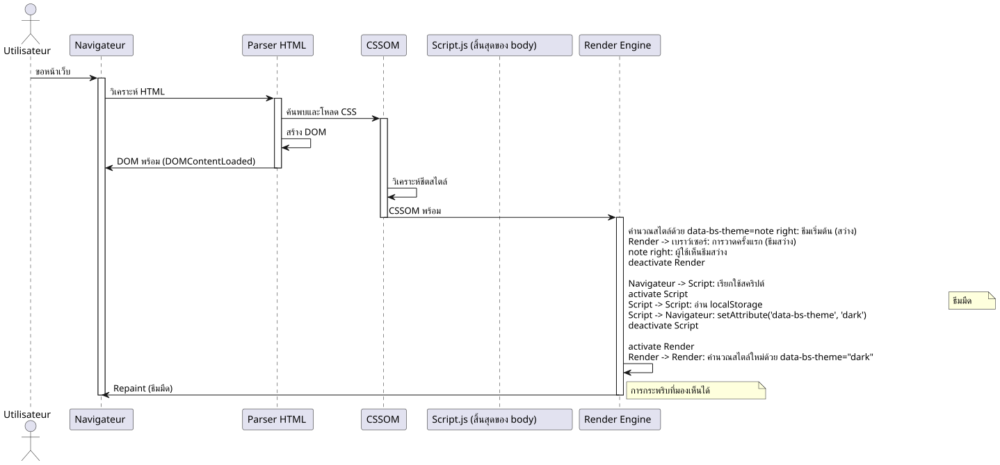

ศิลปะของการพรีโหลด : กำจัด 'Flash' ของธีมด้วย JavaScript และ CSS
เผยแพร่เมื่อ 15 November 2025
สรุป
ในบทความทางเทคนิคที่ลึกซึ้งนี้ เราจะสำรวจวิธีการทำ theme selector (light/dark) โดยไม่ให้เกิดผลกระพริบที่น่ารำคาญที่เกิดขึ้นระหว่างการโหลดหน้าเพจ เราวิเคราะห์อย่างละเอียดถึงวงจรการแสดงผลของเบราว์เซอร์ สาเหตุที่แท้จริงของ FOUC (Flash of Unstyled Content) และเสนอวิธีแก้ปัญหาที่แข็งแกร่งโดยใช้การโหลดล่วงหน้าแบบซิงโครนัสภายใน`<head>`. เทคนิคนี้รับประกันประสบการณ์ผู้ใช้ที่ราบรื่นและเป็นมืออาชีพ
ปัญหา: นี้เป็นการกระพริบของธีมที่ถูกสาป
ฝันร้ายต่อประสบการณ์ผู้ใช้
จินตนาการถึงฉากนี้: คุณใช้เวลาหลายชั่วโมงในการออกแบบธีมมืดที่สวยงามให้กับแอปพลิเคชันเว็บของคุณ สีเป็นไปอย่างสมบูรณ์แบบและความคมชัดก็ดีที่สุด และผู้ใช้ของคุณก็รักตัวเลือกนี้ แต่มีปัญหาอายๆ: ทุกครั้งที่หน้าเว็บรีเฟรช แม้เพียงเสี้ยววินาที ธีมสว่างเริ่มต้นจะปรากฏขึ้นก่อนที่ธีมมืดจะทำงาน
แฟลชภาพนี้ แม้จะสั้นๆ (บางครั้งน้อยกว่า 100 มิลลิวินาที) แต่สามารถรับรู้ได้ทันทีโดยดวงตาของมนุษย์และทำให้เกิดประสบการณ์ที่ไม่พึงประสงค์ สำหรับผู้ใช้ที่เลือกธีมมืดเพื่อความสะดวกทางสายตาหรือเหตุผลด้านการเข้าถึง การกระพริบนี้อาจเป็นอันตรายต่อเจ็บปวด โดยเฉพาะในสภาพแวดล้อมที่มีแสงน้อย
FOUC: ปัญหาเว็บที่เก่า
ปรากฏการณ์นี้เป็นรูปแบบของสิ่งที่เรียกว่า 'Flash of Unstyled Content' (FOUC) ซึ่งเป็นปัญหาคลาสสิกในการพัฒนาเว็บที่ย้อนกลับไปถึงยุคเริ่มต้นของ CSS ปรากฏการณ์ FOUC เกิดขึ้นเมื่อเบราว์เซอร์แสดงเนื้อหา HTML ชั่วคราวโดยไม่มีสไตล์ CSS ที่ใช้กับมัน ทำให้เกิดแฟลชของเนื้อหาที่ไม่ได้รับการจัดสไตล์
ในกรณีเฉพาะของเรา, เราไม่ได้พูดถึงเนื้อหาที่ไม่มีการจัดรูปแบบโดยสิ้นเชิง, แต่เป็นอันแฟลชจากธีมที่ผิด(FOWT) - เนื้อหาถูกจัดรูปแบบ แต่เป็นธีมที่ผิด. มันน่าหงุดหงิดอย่างยิ่ง เพราะแสดงให้เห็นว่าแอปพลิเคชันของเรา "ลืม" ความชอบของผู้ใช้ทุกครั้งที่โหลดหน้าเว็บ
ผลกระทบต่อการรับรู้คุณภาพ
แม้ปัญหานี้เป็นทางเทคนิค แต่มีผลกระทบอย่างมากต่อการรับรู้ถึงคุณภาพของแอปพลิเคชันของคุณ :
ขาดความประณีตการกระพริบทำให้ดูเหมือนว่าแอปพลิเคชันยังไม่เสร็จสมบูรณ์หรือได้รับการปรับปรุงไม่ดี ผู้ใช้มักจะเชื่อมโยงข้อบกพร่องทางภาพเล็ก ๆ นี้กับการขาดความเป็นมืออาชีพโดยทั่วไป
การสูญเสียความสอดคล้องแอปพลิเคชันดูเหมือนจะ 'ลืม' ความต้องการของผู้ใช้ สร้างความรู้สึกไม่สอดคล้องระหว่างอินเทอร์เฟซกับความคาดหวัง.
ความเมื่อยล้าของดวงตาสำหรับผู้ใช้ที่ไวต่อแสงหรือมีอาการไมเกรน แฟลชที่สว่างนี้อาจเป็นมากกว่าเพียงความรบกวนทางสุนทรียศาสตร์
ประสิทธิภาพที่รับรู้: อย่างขัดแย้ง แม้เว็บไซต์ของคุณจะโหลดเร็ว การกระพริบนี้อาจทำให้รู้สึกเหมือนแอปพลิเคชันช้า หรือตอบสนองช้า
การวิเคราะห์ทางเทคนิคของปัญหา
เพื่อเข้าใจวิธีการแก้ปัญหานี้ คุณต้องเริ่มต้นด้วยการเข้าใจว่าทำไมมันถึงเกิดขึ้น การกระพริบเกิดจากความคลาดเคลื่อนของเวลาระหว่างสามเหตุการณ์สำคัญในวงจรชีวิตของหน้าเว็บ:
-
การพาร์ส HTML เบื้องต้นเบราว์เซอร์จะอ่านและวิเคราะห์โครงสร้างของหน้าของคุณ
-
การประยุกต์ใช้สไตล์ CSSเบราว์เซอร์ใช้กฎ CSS และคำนวณการแสดงผลที่มองเห็นได้
-
การทำงานของ JavaScriptโค้ดของคุณที่เปลี่ยนธีมกำลังทำงาน
ปัญหาจะเกิดขึ้นเมื่อเหตุการณ์ที่ 3 (การดำเนินการของ JavaScript) มาถึงหลังจากเบราว์เซอร์ได้เริ่มต้นหรือเสร็จสิ้นเหตุการณ์ที่ 2 (การใช้สไตล์) แล้ว ณ เวลานั้น เบราว์เซอร์ได้ตัดสินใจแล้วว่าจะแสดงธีมใด และโค้ดของคุณมาช้าเกินไปที่จะมีอิทธิพลต่อการตัดสินใจนั้นก่อนการเรนเดอร์ครั้งแรก
ทำไมสคริปต์คลาสสิกจึงไม่เพียงพอ?
วิธีการโดยสัญชาติญาณแต่ไม่มีประสิทธิภาพ
วิธีการที่เป็นธรรมชาติที่สุดสำหรับนักพัฒนาคือการวางสคริปต์ไว้ท้ายของเรา`<body>`ซึ่งตรวจสอบธีมที่ผู้ใช้ชื่นชอบและนำไปใช้. แนวทางนี้ปฏิบัติตามแนวทางปฏิบัติแบบดั้งเดิมของเว็บที่แนะนำให้โหลดสคริปต์ท้ายหน้าเพื่อไม่ให้บล็อกการแสดงผล.
// À la fin de <body> - L'APPROCHE INSUFFISANTE
document.addEventListener('DOMContentLoaded', () => {
const theme = localStorage.getItem('preferred-theme');
if (theme === 'dark') {
document.documentElement.setAttribute('data-bs-theme', 'dark');
}
});การเข้าใกล้แบบนี้ดูเหมือนจะเป็นเหตุผลที่ดีในตอนแรก เรารอให้ DOM พร้อม จากนั้นจึงใช้ธีม ง่ายใช่ไหม? น่าเสียดาย ความเรียบง่ายนี้ปกปิดข้อผิดพลาดพื้นฐานที่เกี่ยวกับเวลาในวงจรการแสดงผลของเบราว์เซอร์
เข้าใจเหตุการณ์ DOMContentLoaded
เหตุการณ์`DOMContentLoaded`เกิดขึ้นเมื่อเอกสาร HTML เริ่มต้นถูกโหลดและวิเคราะห์จนเสร็จสมบูรณ์โดยเบราว์เซอร์โดยไม่รอจุดสิ้นสุดของการโหลดไฟล์สไตล์, รูปภาพ และเฟรมย่อย. นี่เป็นจุดสำคัญที่ควรเข้าใจ
นี่คือลำดับเหตุการณ์ทั่วไป :
-
เบราว์เซอร์เริ่มดาวน์โหลดไฟล์ HTML
-
มันวิเคราะห์ HTML ขณะที่ได้รับ
-
เขาค้นพบแท็ก`<link>`สำหรับ CSS และเริ่มดาวน์โหลดพวกเขา
-
เขาค้นพบแท็ก`<script>`และทำให้ทำงาน (ตามประเภทและคุณลักษณะของพวกมัน)
-
เขาสร้าง DOM (Document Object Model)
-
เหตุการณ์
DOMContentLoadedจะเกิดขึ้น -
เขายังคงใช้สไตล์และทำการจัดวาง
-
การวาดครั้งแรก (การแสดงผล) เกิดขึ้น
-
เหตุการณ์`load`ทำงานเมื่อทรัพยากรทั้งหมดถูกโหลดแล้ว
ปัญหาอยู่ตรงไหน? ระหว่างขั้นตอนที่ 6 (DOMContentLoaded) และขั้นตอนที่ 8 (การวาดครั้งแรก) เบราว์เซอร์ได้ตัดสินใจแล้วว่าจะแสดงหน้าอย่างไร หากสคริปต์เปลี่ยนธีมของคุณทำงานในขั้นตอนที่ 6 ก็สายเกินไปที่จะหลีกเลี่ยงการแสดงผลครั้งแรกด้วยสไตล์เริ่มต้น
ปัญหาการบล็อกการแสดงผล
ความจริงแล้วเวลาเป็นเรื่องซับซ้อนยิ่งขึ้น นักท่องเว็บสมัยใหม่ใช้เทคนิคการปรับแต่งที่ซับซ้อนเพื่อปรับปรุงประสิทธิภาพที่รับรู้ได้ พวกเขาพยายามทำให้การแสดงผลครั้งแรก (First Contentful Paint) ทำได้เร็วที่สุดเท่าที่จะทำได้ เพื่อให้ผู้ใช้เห็นบางอย่างบนหน้าจอ
CSS เป็น "render-blocking" โดยค่าเริ่มต้น ซึ่งหมายความว่าเบราว์เซอร์จะต้องดาวน์โหลดและวิเคราะห์ไฟล์สไตล์ชีทก่อนที่จะทำการวาดครั้งแรก นี่เป็นเรื่องสมเหตุผล เนื่องจากเราไม่ต้องการแสดงเนื้อหาที่ไม่มีการจัดรูปแบบ
แต่มีกับดักนี้อยู่: เมื่อเบราว์เซอร์ใช้สไตล์ CSS เหล่านี้เป็นครั้งแรก มันทำโดยอิงจากสถานะปัจจุบันของ DOM หากแอตทริบิวต์`data-bs-theme`ยังไม่ได้กำหนดบนแท็ก`<html>`, เบราว์เซอร์จะใช้สไตล์เริ่มต้น (โดยปกติคือธีมสว่าง)
ต่อมา, เมื่อสคริปต์ของคุณทำงานและเปลี่ยนแอตทริบิวต์นี้, เบราว์เซอร์ต้อง:
-
คำนวณใหม่ทุกสไตล์ที่ได้รับผลกระทบจากการเปลี่ยนแปลงนี้
-
ทำเลย์เอาต์ใหม่ถ้าจำเป็น
-
ทาสีซ้ำชิ้นส่วนที่ได้รับผลกระทบ
กระบวนการคำนวณใหม่และการทาสีใหม่คือสิ่งที่ทำให้เกิดการกระพริบที่มองเห็นได้
การแสดงภาพของปัญหา
เพื่อทำความเข้าใจลำดับที่มีปัญหานี้ให้ดียิ่งขึ้น เรามาตรวจสอบแผนภาพลำดับโดยละเอียดกันเถอะ :

แผนภาพนี้แสดงให้เห็นปัญหาอย่างชัดเจน: การวาดครั้งแรกเกิดขึ้นก่อนที่สคริปต์ของเราจะมีโอกาสกำหนดธีมที่ถูกต้องได้ จากนั้นการวาดซ้ำครั้งต่อมาทำให้เกิดการกระพริบที่มองเห็นได้
ความพยายามในการแก้ปัญหาที่ไม่ได้ผล
มีหลายวิธีที่ได้พยายามแก้ไขปัญหานี้ แต่ส่วนใหญ่ก็มีข้อเสียของตัวมันเอง :
วิธีที่ 1 : ซ่อนเนื้อหาจนกว่าจะโหลดเสร็จ
body {
opacity: 0;
transition: opacity 0.3s;
}
body.loaded {
opacity: 1;
}วิธีนี้จะซ่อนเนื้อหาทั้งหมดจนกว่า JavaScript จะตั้งค่าธีมที่ถูกต้องได้ ปัญหาคือมันทำให้การแสดงผลเนื้อหาล่าช้าอย่างเทียม ทำให้รู้สึกเหมือนเว็บไซต์ช้าลง นอกจากนี้ หาก JavaScript ถูกปิดใช้งาน ผู้ใช้จะไม่เห็นอะไรเลย!
วิธีที่ 2 : ใช้ loader/spinner
คล้ายกับวิธีที่ 1 แต่มีสปินเนอร์แสดงการโหลด. มันซ่อนปัญหาเอาไว้ ไม่ได้ทำให้ประสิทธิภาพจริงดีขึ้น และเพิ่มความล่าช้าที่รับรู้โดยไม่จำเป็น.
แนวทางที่ 3: ตั้งค่าเริ่มต้นเป็นโหมดมืด
บางนักพัฒนาตั้งค่าธีมมืดเป็นค่าเริ่มต้นใน CSS. ทำให้ไม่มีการกระพริบสำหรับผู้ใช้ธีมมืด แต่ก่อให้เกิดปัญหาตรงข้ามกับผู้ใช้ธีมสว่าง!
ไม่มีวิธีการใดเหล่านี้ที่เป็นที่น่าพอใจ เนื่องจากพวกเขามุ่งรักษาอาการมากกว่าสาเหตุหลักของปัญหา.
ทางออกที่แท้จริง : ทำก่อน
กุญแจสำคัญในการแก้ไขปัญหานี้คือการตระหนักว่าเราต้องกำหนดคุณสมบัติ`data-bs-theme` ก่อนที่เว็บเบราว์เซอร์ยังไม่เริ่มใช้งานสไตล์ CSS นั่นหมายความว่าสคริปต์ของเราต้องทำงานก่อนในวงจรชีวิตของหน้า และนี่คือสิ่งที่เราจะสำรวจในส่วนต่อไป.
วิธีแก้ไข : การโหลดล่วงหน้า (Early Loading)
หลักการพื้นฐาน
วิธีแก้ที่สง่างามสำหรับปัญหาการกระพริบของเราอาศัยอยู่บนหลักการง่ายๆ แต่ทรงพลัง :ซิงโครไนซ์สถานะของแอปพลิเคชันกับกระบวนการแสดงผลของเบราว์เซอร์. แทนที่จะรอให้หน้าเว็บโหลดเสร็จเพื่อกำหนดธีม เราต้องกำหนดมันระหว่างการโหลด แม้กระทั่งก่อนที่รูปแบบ CSS จะถูกใช้งาน
วิธีการนี้เรียกว่า "Early Loading" หรือ "Synchronous Preloading" ในศัพท์เฉพาะของการพัฒนาเว็บ. แนวคิดคือการดำเนินการตรรกะการตรวจจับธีมของเราให้เร็วที่สุดเท่าที่จะเป็นไปได้ในวงจรชีวิตของหน้า โดยอย่างยิ่งภายในแท็ก`<head>`, แม้กระทั่งก่อนที่เบราว์เซอร์จะเริ่มดาวน์โหลดไฟล์ CSS.
ทำไมแท็ก <head> จึงเป็นที่เหมาะสมที่สุด
Le `<head>`เอกสาร HTML จะถูกประมวลผลโดยเบราว์เซอร์แบบลำดับจากบนลงล่าง องค์ประกอบแต่ละตัวจะถูกประมวลผลตามลำดับที่ปรากฏ คุณสมบัตินี้เป็นสิ่งสำคัญต่อโซลูชันของเรา
เมื่อเบราว์เซอร์พบแท็ก`<script>`ใน`<head>`โดยไม่มีแอตทริบิวต์`async` ou defer, il :
-
หยุดการพาร์สของ HTML
-
ดาวน์โหลดสคริปต์(ถ้า ภายนอก) หรือ เตียง (ถ้า อินไลน์)
-
รันสคริปต์ทันที
-
ดำเนินการวิเคราะห์ HTML ต่อ
การกระทำนี้ซึ่งมักถูกพิจารณาว่าเป็นปัญหาด้านประสิทธิภาพ (ดังนั้นคำแนะนำทั่วไปที่ให้วางสคริปต์ไว้ท้ายหน้า) จึงกลายมาเป็นพันธมิตรของเราในกรณีเฉพาะนี้ การวางสคริปต์ตรวจจับธีมของเราไว้ที่จุดเริ่มต้น`<head>`, เรารับประกันว่ามันจะทำงานก่อนที่เบราว์เซอร์จะพบแท็ก`<link>`ของไฟล์สไตล์ของเรา.
สถาปัตยกรรมของโซลูชันแบบสามชั้น
โซลูชั่นครบวงจรของเราประกอบด้วยสามชั้นที่เชื่อมต่อถึงกัน โดยแต่ละชั้นทำหน้าที่เฉพาะเจาะจง :
ชั้น 1 : ความคงอยู่ (localStorage) ชั้นนี้รับผิดชอบการบันทึกและดึงคืนตัวเลือกของผู้ใช้ระหว่างเซสชัน.
ชั้นที่ 2 : การซิงโครไนซ์ล่วงหน้า (สคริปต์อินไลน์ใน <head>) ชั้นนี้ซิงค์สถานะของแอปพลิเคชันเข้ากับ DOM ก่อนที่จะมีการเรนเดอร์เริ่มต้น
ชั้น 3 : สไตล์ที่ตอบสนอง (CSS โดยใช้ตัวเลือกแอตทริบิวต์) ชั้นนี้กำหนดรูปแบบภาพตามเงื่อนไขที่กำหนดโดยชั้นที่ 2
ตอนนี้เรามาสำรวจทุกชั้นกันโดยละเอียด
ขั้นตอนที่ 1: บันทึกการเลือกของผู้ใช้
localStorage: ความจำที่คงทนของคุณ
Le localStorage`เป็น API เว็บสตอเรจที่ช่วยให้สามารถจัดเก็บคู่คีย์-ค่าในเบราว์เซอร์ได้อย่างต่อเนื่อง. ต่างจากคุกกี้, ข้อมูลของ`localStorage:
:
-
ไม่ได้ถูกส่งไปที่เซิร์ฟเวอร์โดยอัตโนมัติ
-
มีความจุจัดเก็บที่เพิ่มขึ้น (โดยทั่วไป 5-10 MB)
-
ไม่มีวันหมดอายุ (ยังคงอยู่จนกว่าจะถูกลบอย่างชัดเจน)
-
ถูกจำกัดเฉพาะโปรโตคอลและโดเมน (Same-Origin Policy)
สำหรับกรณีการใช้งานของเรา, มัน`localStorage`มันสมบูรณ์เพราะว่า:
-
เราไม่จำเป็นต้องแบ่งปันข้อมูลนี้กับเซิร์ฟเวอร์
-
เราต้องการให้ความชอบยังคงอยู่ตลอดไป
-
ความต้องการพื้นที่จัดเก็บมีน้อยมาก (เพียงไม่กี่ไบต์)
การดำเนินการสำรองข้อมูลธีม
นี่คือวิธีที่เราเก็บการเลือกของผู้ใช้เมื่อพวกเขาเปลี่ยนธีม :
// Fonction complète pour changer le thème
function setTheme(newTheme) {
// Validation de l'entrée
if (!['light', 'dark', 'auto'].includes(newTheme)) {
console.error('Thème invalide:', newTheme);
return;
}
try {
// Sauvegarde dans localStorage
localStorage.setItem('preferred-theme', newTheme);
// Application immédiate dans le DOM
document.documentElement.setAttribute('data-bs-theme', newTheme);
// Dispatch d'un événement personnalisé pour notifier d'autres composants
window.dispatchEvent(new CustomEvent('theme-changed', {
detail: { theme: newTheme }
}));
console.log('Thème changé:', newTheme);
} catch (error) {
console.error('Erreur lors de la sauvegarde du thème:', error);
// Fallback : on applique quand même le thème visuellement
document.documentElement.setAttribute('data-bs-theme', newTheme);
}
}
// Exemple d'utilisation avec un bouton
document.getElementById('theme-toggle').addEventListener('click', () => {
const currentTheme = document.documentElement.getAttribute('data-bs-theme') || 'light';
const newTheme = currentTheme === 'light' ? 'dark' : 'light';
setTheme(newTheme);
});เป็นสิ่งสำคัญที่จะต้องจัดการกรณีที่`localStorage`ไม่พร้อมใช้งานหรือไม่สามารถเข้าถึงได้. หลายสถานการณ์สามารถป้องกันการเข้าถึงไปยัง`localStorage`:
เป็นสิ่งสำคัญที่จะต้องจัดการกับกรณีที่`localStorage`ไม่ว่างหรือไม่สามารถเข้าถึงได้. หลายสถานการณ์อาจป้องกันการเข้าถึงไปที่`localStorage` :
การนำทางส่วนตัวอย่างเข้มงวดซาฟารีในโหมดการท่องเว็บส่วนตัวเกิดข้อยกเว้น`QuotaExceededError`เมื่อมีการพยายามเขียนใน`localStorage`.
การตั้งค่าความเป็นส่วนตัวบางเบราว์เซอร์หรือส่วนขยายความเป็นส่วนตัวอาจบล็อกการเข้าถึง`localStorage`.
ข้อจำกัดของโดเมน : Le `localStorage`ไม่สามารถเข้าถึงได้บนโปรโตคอล`file://`ในบางเบราว์เซอร์.
พื้นที่จัดเก็บเต็มแม้ว่าจะเกิดขึ้นได้ยาก แต่พื้นที่จัดเก็บสามารถเต็มได้อย่างสมบูรณ์
นั่นคือเหตุผลที่โค้ดของเราใช้บล็อก`try…catch`เพื่อจัดการกรณีเหล่านี้อย่างราบรื่น และยังคงให้บริการฟังก์ชันเปลี่ยนธีมต่อไป แม้ว่าการทำให้ข้อมูลคงที่จะไม่พร้อมใช้งาน
กลยุทธ์การดำรงอยู่ขั้นสูง
สำหรับแอปพลิเคชันที่ซับซ้อนมากขึ้น คุณสามารถพิจารณากลยุทธ์เพิ่มเติม :
การซิงโครไนซ์เซิร์ฟเวอร์ (ไม่บังคับ)
async function setTheme(newTheme) {
// Sauvegarde locale immédiate
localStorage.setItem('preferred-theme', newTheme);
document.documentElement.setAttribute('data-bs-theme', newTheme);
// Synchronisation serveur en arrière-plan (si l'utilisateur est connecté)
if (userIsAuthenticated()) {
try {
await fetch('/api/user/preferences', {
method: 'POST',
headers: { 'Content-Type': 'application/json' },
body: JSON.stringify({ theme: newTheme })
});
} catch (error) {
console.warn('Échec de la synchronisation serveur:', error);
// L'échec n'est pas critique car la préférence est déjà sauvegardée localement
}
}
}วิธีนี้ช่วยให้สามารถซิงโครไนซ์การตั้งค่า (preferences) ระหว่างอุปกรณ์ได้สำหรับผู้ใช้ที่ลงชื่อเข้าใช้ และในเวลาเดียวกันก็ยังคงไว้ซึ่งการตอบสนองแบบพื้นที่ท้องถิ่นได้ทันที
ขั้นตอนที่ 2 : สคริปต์การโหลดล่วงหน้าใน `<head>
หัวใจของวิธีแก้ไข
นี่คือที่ที่เวทมนตร์เกิดขึ้นจริงๆ เราจะวางสคริปต์เล็กๆ.inlineโดยตรงในของเรา`<head>`, ก่อนที่จะถึงแท็กทั้งหมดของเรา`<link>`ของสไตล์ชีท. สคริปต์นี้มีความตั้งใจที่จะเป็นแบบเรียบง่าย อิสระ และออกแบบมาให้ทำงานได้เร็วที่สุดเท่าที่จะทำได้
<!DOCTYPE html>
<html lang="fr">
<head>
<meta charset="UTF-8">
<meta name="viewport" content="width=device-width, initial-scale=1.0">
<title>Mon Site Incroyable</title>
<!-- ==========================================
NOTRE SCRIPT MAGIQUE DE PRÉ-CHARGEMENT
Ce script DOIT être le premier élément
dans le <head> après les meta tags
========================================== -->
<script>
// IIFE pour ne pas polluer le scope global
(function() {
'use strict';
try {
// Lecture de la préférence sauvegardée
const savedTheme = localStorage.getItem('preferred-theme');
// Si une préférence existe, on l'applique immédiatement
if (savedTheme) {
document.documentElement.setAttribute('data-bs-theme', savedTheme);
}
// Optionnel : Détecter la préférence système si aucune sauvegarde
else if (window.matchMedia && window.matchMedia('(prefers-color-scheme: dark)').matches) {
document.documentElement.setAttribute('data-bs-theme', 'dark');
}
// Sinon, le thème par défaut du CSS sera utilisé (généralement 'light')
} catch (error) {
// En cas d'erreur (localStorage bloqué, etc.), on log discrètement
// et on laisse le thème par défaut s'appliquer
console.warn('Impossible de charger la préférence de thème:', error);
}
})();
</script>
<!-- FIN DU SCRIPT MAGIQUE -->
<!-- Les feuilles de style sont chargées APRÈS le script -->
<link rel="stylesheet" href="css/bootstrap.min.css">
<link rel="stylesheet" href="css/styles.css">
<!-- Autres ressources du head -->
<link rel="icon" href="favicon.ico">
</head>
<body>
<!-- Contenu de la page -->
</body>
</html>กายวิภาคของสคริปต์ : ทุกบรรทัดมีความสำคัญ
เรามาวิเคราะห์สคริปต์นี้บรรทัดต่อบรรทัด เพื่อให้เข้าใจถึงการตัดสินใจด้านการออกแบบของแต่ละขั้นตอน
IIFE (ฟังก์ชันนิพจน์ที่ถูกเรียกใช้งานทันที)
(function() {
// ...
})();โครงสร้างนี้สร้างฟังก์ชันที่ทำงานทันที. ทำไม ? เพื่อแยกตัวแปรของเราในขอบเขตท้องถิ่นและหลีกเลี่ยงการทำให้ขอบเขตทั่วโลกปนเปื้อน. แม้ว่าเราจะใช้เพียง`const`(ซึ่งมี scope ของบล็อก), IIFE เป็นแนวทางปฏิบัติที่ดี ทำให้เจตนาของเราชัดเจนและช่วยป้องกันความขัดแย้งของชื่อที่อาจเกิดขึ้น
โหมดที่เข้มงวด
'use strict';คำสั่งนี้เปิดใช้งานโหมดเคร่งครัดของ JavaScript ซึ่ง : - ห้ามการใช้ตัวแปรที่ไม่ได้ประกาศ - สร้างข้อผิดพลาดสำหรับการดำเนินงานที่เป็นอันตราย - ปรับปรุงประสิทธิภาพในบางเอนจิน JavaScript
สำหรับสคริปต์ที่สำคัญเช่นนี้ เราต้องการความปลอดภัยสูงสุด।
บล็อก try…catch
try {
// Code principal
} catch (error) {
console.warn('Impossible de charger la préférence de thème:', error);
}บล็อกนี้มีความสำคัญอย่างยิ่ง. มันรับประกันว่าหากบางสิ่งผิดพลาดเกิดขึ้น (localStorage ถูกบล็อก, ข้อผิดพลาดไวยากรณ์ที่ไม่น่าจะเกิด, ฯลฯ), สคริปต์ของเราจะไม่ทำให้การโหลดหน้าเพจทั้งหมดหยุดลง การใช้`console.warn`แทนที่จะ`console.error`บ่งชี้ว่าเป็นปัญหาเล็กน้อย
การอ่าน localStorage
const savedTheme = localStorage.getItem('preferred-theme');บรรทัดนี้อาจทำให้เกิดข้อยกเว้นในบางบริบท (การนำทางส่วนตัวที่เข้มงวดของซาฟารี) ดังนั้นจึงอยู่ภายในบล็อก try…catch.
แอปพลิเคชันตามเงื่อนไข
if (savedTheme) {
document.documentElement.setAttribute('data-bs-theme', savedTheme);
}เราจะใช้ธีมก็ต่อเมื่อเราพบว่าได้บันทึกไว้เท่านั้น มิฉะนั้น เราจะปล่อยให้ CSS ใช้ธีมเริ่มต้นของมัน วิธีนี้มีความแข็งแกร่งกว่าการกำหนดค่าเริ่มต้นแบบฮาร์ดโค้ดใน JavaScript
การตรวจจับความชอบของระบบ (โบนัส)
การปรับปรุงที่เลือกได้แต่สง่างามคือการตรวจจับความชอบธีมของระบบปฏิบัติการของผู้ใช้ หากยังไม่ได้ทำตัวเลือกที่ชัดเจนในแอปพลิเคชันของคุณ :
ฟีเจอร์นี้ใช้ Media Query`prefers-color-scheme`เพื่อสอบถามระบบ บน macOS, Windows 10+, iOS และ Android เวอร์ชั่นใหม่ คำขอนี้จะคืนการตั้งค่าระบบของผู้ใช้
ฟีเจอร์นี้ใช้ Media Query`prefers-color-scheme` pour interroger le système. Sur macOS, Windows 10+, iOS, et Android moderne, cette requête retourne la préférence système de l’utilisateur.
ข้อดี : - ประสบการณ์ที่ปรับแต่งตั้งแต่ครั้งแรกที่เยี่ยมชม ความสอดคล้องกับสภาพแวดล้อมระบบของผู้ใช้ - ไม่จำเป็นต้องใช้พื้นที่จัดเก็บในการเยี่ยมชมครั้งแรก
ข้อควรพิจารณา : - ไม่ใช่ทุกเบราว์เซอร์รองรับฟีเจอร์นี้ (แต่การสนับสนุนยอดเยี่ยมตั้งแต่ปี 2020) - การตรวจสอบ`window.matchMedia`รับรองความเข้ากันได้ ผู้ใช้สามารถแก้ไขตัวเลือกนี้ได้ตลอดเวลา
ประสิทธิภาพ : ทำไมสคริปต์นี้ถึงเร็ว
สคริปต์โหลดล่วงหน้าของเราออกแบบมาเพื่อทำงานได้อย่างรวดเร็วมาก :
อินไลน์: ไม่มีการร้องขอ HTTP เพิ่มเติม สคริปต์อยู่ใน HTML ดังนั้นจึงพร้อมใช้งานทันที.
Inlineไม่มีการร้องขอ HTTP เพิ่มเติม สคริปต์อยู่ใน HTML ดังนั้นจึงพร้อมใช้งานทันที
ปฏิบัติการซิงโครนัสแบบง่ายๆ: การอ่านคีย์จาก localStorage (การทำงานอย่างรวดเร็วสุดๆ) และการเปลี่ยนแปลงแอตทริบิวต์ DOM (การทำงานที่เป็นฟีเจอร์ในตัวของเบราว์เซอร์)
ไม่มีการพึ่งพาไม่มีเฟรมเวิร์ก, ไม่มีไลบรารี, มีเพียง JavaScript ธรรมดาเท่านั้น. ไม่มีเวลาเริ่มต้น และไม่มีการ parse ของความสัมพันธ์การพึ่งพา
การดำเนินการเพียงครั้งเดียวสคริปต์นี้ทำงานเพียงครั้งเดียวเมื่อโหลด. ไม่มีตัวฟังเหตุการณ์ ไม่มีลูป ไม่มีการคำนวณซับซ้อน
ในทางปฏิบัติ บนฮาร์ดแวร์สมัยใหม่ สคริปต์นี้ทำงานเสร็จภายในเวลาไม่ถึง 1 มิลลิวินาที – เวลาสั้นมากที่ไม่สามารถรับรู้ได้และไม่มีผลกระทบต่อประสิทธิภาพการโหลดหน้า
การวางตำแหน่งที่เหมาะสม ใน <head>
ลำดับขององค์ประกอบใน`<head>`เป็น สำคัญ. นี่คือ ลำดับ ที่แนะนำ :
<head>
<!-- 1. Métadonnées critiques -->
<meta charset="UTF-8">
<meta name="viewport" content="width=device-width, initial-scale=1.0">
<!-- 2. Notre script de pré-chargement (IMMÉDIATEMENT après les meta) -->
<script>
(function() { /* notre code */ })();
</script>
<!-- 3. Titre de la page -->
<title>Mon Site</title>
<!-- 4. Feuilles de style -->
<link rel="stylesheet" href="styles.css">
<!-- 5. Autres ressources (fonts, favicons, etc.) -->
<link rel="preconnect" href="https://fonts.googleapis.com">
<link rel="icon" href="favicon.ico">
<!-- 6. Autres scripts avec defer ou async -->
<script src="app.js" defer></script>
</head>คำสั่งนี้รับประกันว่า :
-
charset ถูกกำหนดไว้ก่อนการประมวลผลข้อความทั้งหมด
-
สคริปต์ของเราทำงานก่อนการโหลด CSS
-
จากนั้นจึงมีการโหลด CSS แล้วนำไปใช้กับธีมที่เหมาะสมทันที
-
ทรัพยากรที่ไม่สำคัญอื่น ๆ จะถูกโหลดเป็นลำดับสุดท้าย
ขั้นตอนที่ 3: พลังของตัวเลือกแอตทริบิวต์ CSS
ระบบธีมของ Bootstrap 5
Bootstrap 5 ได้แนะนำระบบจัดการธีมที่สง่างามโดยอิงจากคุณสมบัติพิเศษของ CSS (ตัวแปร CSS) และตัวเลือกแอตทริบิวต์. ระบบนี้ใช้แอตทริบิวต์`data-bs-theme`บนองค์ประกอบ`<html>`เพื่อกำหนดว่าจะใช้ชุดตัวแปรสีใด。
ความงามของระบบนี้อยู่ที่ความเรียบง่ายของมัน: แทนที่จะโหลดชีตสไตล์ต่างๆ หรือเปิด‑ปิดคลาสบนองค์ประกอบหลายพันรายการ เราเพียงเปลี่ยนแอตทริบิวต์บนองค์ประกอบหนึ่ง และ CSS จะจัดการส่วนที่เหลือด้วยการซ้อน
โครงสร้าง CSS สำหรับระบบธีม
ต่อไปนี้เป็นโครงสร้าง CSS ที่สมบูรณ์แบบสำหรับใช้งานระบบธีมที่แข็งแรง